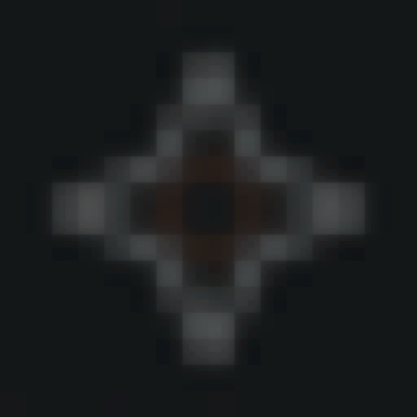
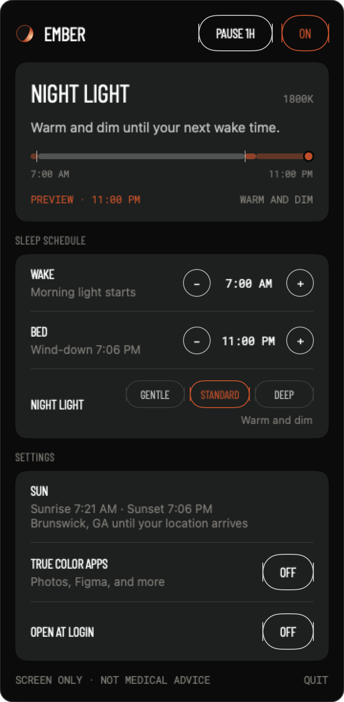

Two times. A whole day.
Set when you wake and when you go to bed. Ember eases through morning, daylight, evening, and night. Optional location adds local sun times.
Explore the day
Ember Get EmberTrue color by day. Warm and dim at night.
A quiet menu bar app that follows your schedule.
$2.99 · One-time purchase
Apple silicon · macOS 14 or later
Your display’s original color, while you work.
Sample schedule · without sun times
Interactive illustration · Not your Mac’s settings
Choose a time. Set your night strength. See how the day changes.
Daylight · 6500K · Original display profile
This illustrates screen color. Your display, brightness, and color profile affect the result.
The useful controls, right where you need them.
Then out of your way for the rest of the day.
Set when you wake and when you go to bed. Ember eases through morning, daylight, evening, and night. Optional location adds local sun times.
Explore the dayPhotos, Preview, Figma, Photoshop, and other color apps get true color while frontmost. Pause for an hour whenever you need it elsewhere.
Try true color appsFrom wake to bedtime
Click a phase to see it in the desktop preview.
Your room. Your comfort.
Display presets for reading comfort, not measured light-exposure targets.
At home in the menu bar
Your current light, your sleep schedule, and the next change. Preview an hour on the day track, adjust your night strength, or pause for true color.

A small app. A simple setup.
Open the downloaded DMG. Drag Ember to Applications, then open it. Look for the crescent in your menu bar.
Two times, plus your preferred night strength. Location is optional; without it, sun times use Brunswick, Georgia.
Turn on Open at login to start each day. Ember turns Night Shift off and quits f.lux while enabled so only one app controls the color.
The science, in context
Ember adjusts one part of your light environment: the display. Daylight, room lighting, screen brightness, and time before bed still matter.
The Brown et al. 2022 consensus recommends brighter daytime light and much lower light for the three hours before bed. CIE guidance explains why color temperature alone is not a health metric. Ember’s presets do not measure the light reaching your eyes or guarantee better sleep.
Still have questions? Get in touch.
The current download is version 0.2.0 for Apple silicon Macs running macOS 14 or later. A notch is not required.
Pay through Whop, then return here and use Download for Mac. Keep your receipt as proof of purchase. Open the DMG and drag Ember to Applications.
Ember applies color changes through macOS display gamma tables. Support depends on your display and connection. The on-screen result can differ with HDR, a display color profile, or other software controlling display color.
Ember turns Night Shift off and quits f.lux while enabled to avoid competing color adjustments. Pause or turn Ember off to restore your display’s original color.
Yes. Pause gives you one hour of true color, then Ember returns. With True color apps enabled, Photos, Preview, Figma, Photoshop, and other supported apps get true color while frontmost.
Ember does not measure light reaching your eyes or guarantee better sleep. A warm tint is not eye-disease protection. Daylight, room lighting, and your sleep routine still matter. For screen discomfort, take breaks, blink, reduce glare, and adjust brightness for comfortable reading. See American Academy of Ophthalmology guidance.
The app has no account or usage telemetry. Settings and optional location stay on your Mac. This website uses Whop attribution; see the Privacy page.
The desktop is an interactive illustration, not a connection to your Mac’s display settings. It approximates color and software dimming. The actual panel screenshot below the preview shows the next release; the public download remains version 0.2.0.
Your screen, on your schedule.
$2.99 · One-time purchase · No subscription
Version 0.2.0 · Apple silicon · macOS 14+ · Signed and notarized
Already bought? Download here. No license key or account in Ember.